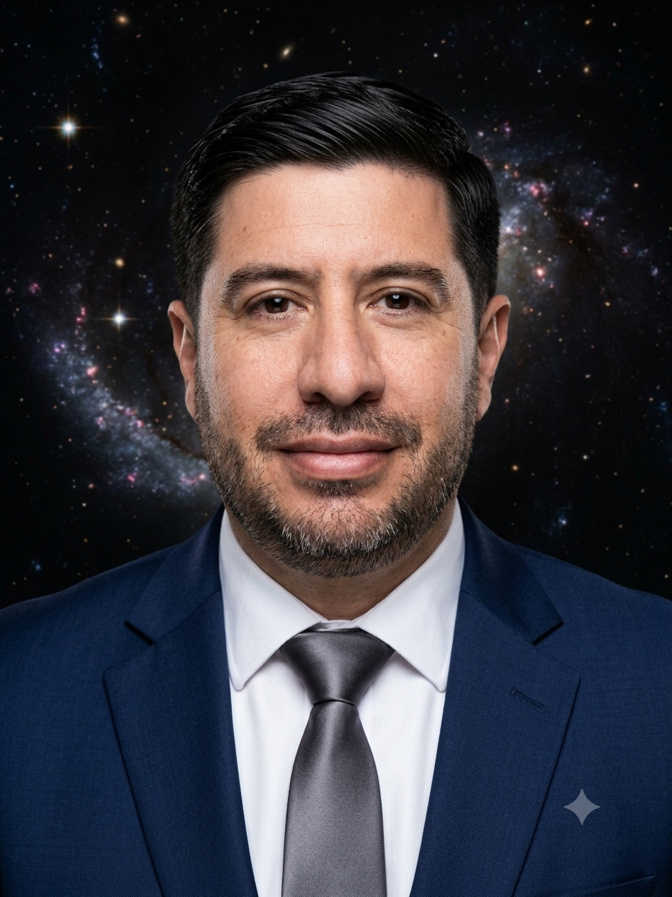

PhD Astronomer · Antofagasta, Chile
Exploring worlds beyond our solar system
About

I am a PhD Astronomer and Associate Professor at the Instituto de Astronomía, Universidad Católica del Norte, in Antofagasta, Chile, where I currently serve as Director. My research focuses on the detection and characterization of exoplanets, low-mass stars, and stellar activity, using data from world-class facilities including TESS and the Next Generation Transit Survey (NGTS).
I completed my doctoral training at the International Max Planck Research School for Astronomy and Cosmic Physics at the University of Heidelberg, receiving my degree Magna Cum Laude in 2011. Since returning to Chile, my work has combined observational research with a strong commitment to training the next generation of astronomers and communicating science to the public.
Outside research, I am interested in science communication, technology, and game development.
Research
Detection and characterization of planets orbiting other stars, with a focus on warm giants and precision transit photometry.
Discovery and characterization of very low-mass stars and objects near the hydrogen-burning limit using photometric and spectroscopic techniques.
Study of stellar activity and its influence on the precision and reliability of exoplanet detection and characterization.
Teaching
Outreach
Scientific support for Expedition to a New Earth, exploring the search for a habitable planet beyond our solar system.
Technical lead and astronomical advisor for the Starlight Certification of the Antofagasta region skies, sponsored by UNESCO.
Scientific coordinator for the children's astronomy series broadcast on national television in Chile.
Regular public talks, planetarium sessions, school visits, science fairs, newspaper articles, and TV interviews on astronomy and space science.